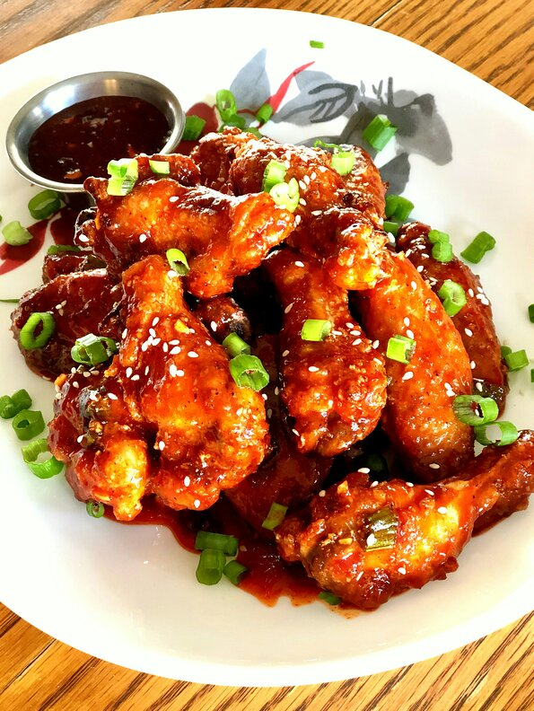

Air Fried Korean Wings

Description
This recipe combines the great technolgy of an Air Frier and wings to create the
best tasting wings you will ever eat. This recipe contains 10 ingredients for
the sauce and 6 ingredients for the wings.
Nutrition Facts
Per Serving: 347 Calories, 16g of protein, 45g Carbohydrates
11.5g fat.
Ingredients
Sauce
- 1/4 cup hot honey (such as Mike's Hot Honey
- 3 tablespoons gochujang (Korean hot pepper paste)
- 1 tablespoon brown sugar
- 1 tablespoon soy sauce
- 1 teaspoon lemon juice
- 2 teaspoons minced garlic
- 1 teaspoon minced fresh ginger root
- 1/2 teaspoon salt
- 1/4 teaspoon black pepper
- 1/4 cup finely chopped green onions (green part only)
Wings
- 2 pounds chicken wings
- 1 teaspoon salt
- 1 teaspoon garlic powder
- 1 teaspoon onion powder
- 1/4 teaspoon black pepper
- 1/2 teaspoon black pepper
Steps
- Combine hot honey, gochujang, brown sugar, soy sauce, lemon juice, garlic, ginger, salt, and black pepper in a saucepan. Bring sauce to a boil over medium heat, reduce heat, and simmer for 5 minutes. Add green onions and stir.
- Preheat air fryer to 400 degrees F (200 degrees C).
- Place wings in a large bowl and toss with salt, garlic powder, onion powder and black pepper. Add cornstarch and toss wings until fully coated. Shake each wing and place in the air fryer basket, making sure they are not touching; cook in batches if necessary.
- Fry in the preheated air fryer for 10 minutes, shake basket, and fry an additional 10 minutes. Flip wings over and fry until chicken is cooked through and juices run clear, 7 to 8 more minutes.
- Dip each wing in the sauce and garnish with chopped green onions and sesame seeds. Serve with remaining sauce on the side.